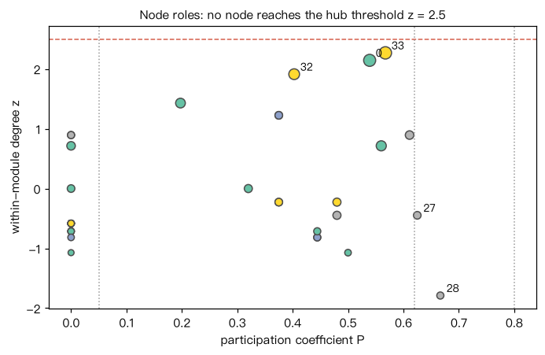

Example13 / 15
节点在社团中的角色——模块内度 z 分数与参与系数 P
Guimerà 与 Amaral（2005）用两个量刻画节点角色： 模块内度 z 分数 z_i = (κ_i - mean κ_{s_i}) / std κ_{s_i}，κ_i 为 i 连向本社团的边数； 参与系数 P_i = 1 - Σ_s (k_is / k_i)^2，k_is 为 i 连向社团 s 的边数。 z ≥ 2.5 记为枢纽，再按 P 划分 7 种角色（R1–R7）。这里在空手道网络的 Louvain 划分上计算。 输出：管理者（33）与教练（0）的 z 最高（约 2.1–2.3），但在只有 34 个节点的网络里达不到 z ≥ 2.5 的枢纽门槛， 按原始阈值都被归为 R2——说明这套阈值是为大网络设计的；P 较高的节点连向多个社团，是“连接者”。
Output输出图

Output文字输出
社团数 4 节点 33 度 17 z = 2.27 P = 0.57 R2 外围 节点 0 度 16 z = 2.14 P = 0.54 R2 外围 节点 32 度 12 z = 1.91 P = 0.40 R2 外围 节点 1 度 9 z = 1.43 P = 0.20 R2 外围 节点 5 度 4 z = 1.22 P = 0.38 R2 外围 参与系数最高的 3 个节点: [(28, 0.67), (27, 0.62), (31, 0.61)]
Code代码
# Guimerà 与 Amaral（2005）用两个量刻画节点角色：
# 模块内度 z 分数 z_i = (κ_i - mean κ_{s_i}) / std κ_{s_i}，κ_i 为 i 连向本社团的边数；
# 参与系数 P_i = 1 - Σ_s (k_is / k_i)^2，k_is 为 i 连向社团 s 的边数。
# z ≥ 2.5 记为枢纽，再按 P 划分 7 种角色（R1–R7）。这里在空手道网络的 Louvain 划分上计算。
# 输出：管理者（33）与教练（0）的 z 最高（约 2.1–2.3），但在只有 34 个节点的网络里达不到 z ≥ 2.5 的枢纽门槛，
# 按原始阈值都被归为 R2——说明这套阈值是为大网络设计的；P 较高的节点连向多个社团，是“连接者”。
import networkx as nx
import numpy as np
K = nx.karate_club_graph()
G = nx.Graph(K.edges())
comms = nx.community.louvain_communities(G, seed=1)
lab = {v: i for i, c in enumerate(comms) for v in c}
kappa = {v: sum(lab[u] == lab[v] for u in G[v]) for v in G}
z = {}
for c in comms:
vals = np.array([kappa[v] for v in c], float)
sd = vals.std() if vals.std() > 0 else 1.0
for v in c:
z[v] = (kappa[v] - vals.mean()) / sd
P = {}
for v in G:
k_is = np.bincount([lab[u] for u in G[v]], minlength=len(comms))
P[v] = 1 - ((k_is / G.degree(v)) ** 2).sum()
def role(zv, pv):
if zv < 2.5:
return "R1 极端外围" if pv <= 0.05 else "R2 外围" if pv <= 0.62 else "R3 非枢纽连接者" if pv <= 0.80 else "R4 非枢纽无归属"
return "R5 局部枢纽" if pv <= 0.30 else "R6 连接枢纽" if pv <= 0.75 else "R7 无归属枢纽"
print("社团数 %d" % len(comms))
for v in sorted(G, key=lambda x: -z[x])[:5]:
print("节点 %2d 度 %2d z = %5.2f P = %.2f %s" % (v, G.degree(v), z[v], P[v], role(z[v], P[v])))
print("参与系数最高的 3 个节点:", [(v, round(float(P[v]), 2)) for v in sorted(G, key=lambda x: -P[x])[:3]])
# 作图：z–P 角色平面，虚线为 Guimerà–Amaral 的角色边界
import matplotlib.pyplot as plt
fig, ax = plt.subplots(figsize=(6.4, 4.2))
ax.scatter([P[v] for v in G], [z[v] for v in G], c=[lab[v] for v in G], cmap="Set2", s=[20 + 5 * G.degree(v) for v in G],
edgecolors="0.3")
for v in sorted(G, key=lambda x: -z[x])[:3] + sorted(G, key=lambda x: -P[x])[:2]:
ax.annotate(str(v), (P[v], z[v]), textcoords="offset points", xytext=(5, 3), fontsize=9)
ax.axhline(2.5, color="#d6604d", ls="--", lw=1)
for x in [0.05, 0.62, 0.80]:
ax.axvline(x, color="0.6", ls=":", lw=1)
ax.set_xlabel("participation coefficient P"); ax.set_ylabel("within-module degree z")
ax.set_title("Node roles: no node reaches the hub threshold z = 2.5", fontsize=10)
plt.tight_layout(); plt.show()Run在浏览器中运行
首次加载 Python 环境约需 20–40 秒；可以修改参数后重新运行。